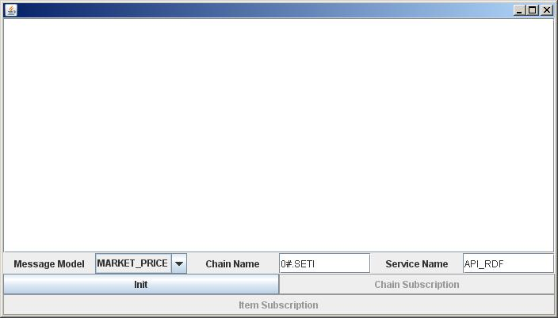
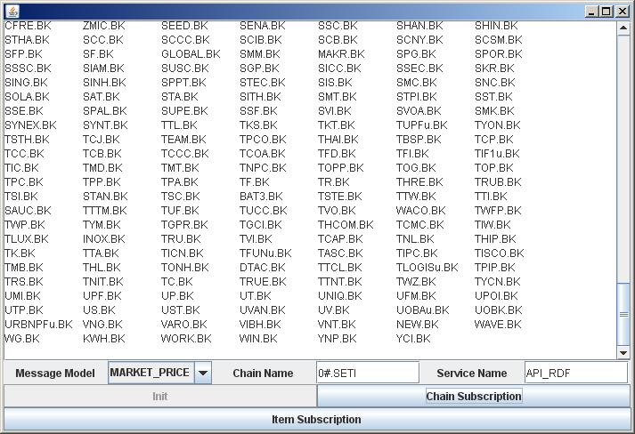
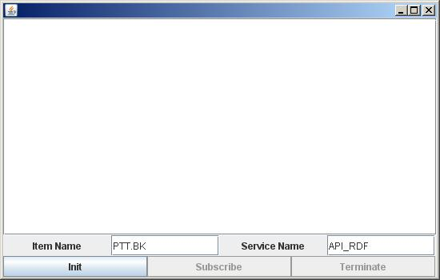

StarterConsumer_Chain demonstrates how to implement an OMM chain consumer application for a chain RIC. It is a GUI application implemented by JAVA Swing.
It requires a user to understand a chain data structure represented in Market Data and OMM format.
The StarterConsumer_Chain requires the user to select "Message Model" (MARKET_PRICE, SYMBOL_LIST, in drop down list), provide a chain RIC name ("Chain Name" text box) and a service name ("Service Name" text box) in the Chain subscriber windows.

Figure 1: Chain Subscription Frame
After the user clicks 'Init' button, RFA will be initialized and ready to send out an item request. RFA will send item request after clicking the "Chain Subscriber" button. The application will check whether the RIC is a chain or not. It will notify the user if the requested item is not a Chain RIC.
After a Chain subscription, the application will display all the RICs in that Chain records. And, the "Item Subscription" button will be enabled.

Figure 2: Chain Subscription result
After displaying all RICs contained in Chain records, the user can repeat Chain subscription of other Chain records by simply changing the value in "Chain Name" text box and then clicking "Chain Subscription" button.
Or, the user can subscribe for an item in the given RIC Chain by just clicking "Item Subscription". The item subscription window will appear.

Figure 3: Item Subscription Frame
Subscribe for an item by inserting Item Name and Service Name, then simply clicking "Init" and "Subscribe". This item subscription window can only be used for item subscription. If the application detects that the user uses this window for Chain subscription, the error message will appear.
To run, use:
java com.reuters.rfa.example.omm.chain.cons.StarterConsumer_Chain
-session myNameSpace::P2PSSession -rdmFieldDictionary /var/triarch/RDMFieldDictionary
-enumType /var/triarch/enumtype.def
StarterConsumer_Chain class is the main class that initializes RFA Context and starts a main window, ChainConsFrame.
ChainConsFrame is implemented as an instance of javax.swing.JFrame. It contains a javax.swing.JTextField that requires a
user to specify a Chain name, an Item name and a Service name. Note that all fields
are mandatory. When it finishes creating GUI, then it will acquire a Session,
create an EventSource.OMM_CONSUMER and an EventQueue,
and create a LoginClient and an ItemManager,
which implements com.reuters.rfa.common.Client.
After the user clicks "Init", ChainConsFrame calls LoginClient to send out login request. LoginClient then calls back and tells ChainConsFrame if the login is successful or not.
After the user clicks "Chain Subscription", ChainConsFrame will check the login result. ChainConsFrame calls ItemManager if the login is successful and ItemManager will then send out item request. Upon receiving the image, the application verifies if this is a Chain record or not. If not, the application notifies the user. If this is an image for Chain record, the application finds and verifies if it has LINK_A or LONGLINK template. The application will use the value in NEXT_LR (FID238) to repeat sending item request until the NEXT_LR is null. If the Chain has LONGLINK template, the application uses the value in LONGNEXTLR (FID 815) instead to repeat sending item request for all records in the Chain.
After the user clicks "Item Subscription" ChainConsFrame object will be created. When the user clicks "Init" and "Subscribe", ChainConsFrame calls LoginClient to send out login request. Upon receiving login successful, ItemManager then sends out item request by using the value in "Item Name" and "Service Name" text boxes. Once the subscription is done, the user can close all requests by clicking "Terminate". After the user clicks "Terminate", all requests in the window will be closed.
After the user selects Message Model type from Chain Subscription frame and then clicks "Chain Subscription", ItemManager sends out request for selected Message Model type, using "Chain Name" and "Service Name" (supplied by user) for subscription.
/**
* Encodes streaming request messages and register them to RFA
*/
public void sendRequest(String _itemNames, String _serviceName)
{
String itemName = _itemNames;
serviceName = _serviceName;
System.out.println(_className + ".sendRequest: Sending item request...");
// Message Model from ChainConsFrame class (selected by user)
String mmt = _sFrame.mmt;
// set message model type [MARKET_PRICE, SYMBOL_LIST]
short capability = RDMMsgTypes.msgModelType(mmt);
OMMItemIntSpec ommItemIntSpec = new OMMItemIntSpec();
// Preparing to send item request message
OMMPool pool = _sFrame.getPool();
OMMMsg ommmsg = pool.acquireMsg();
ommmsg.setMsgType(OMMMsg.MsgType.STREAMING_REQ);
ommmsg.setMsgModelType(capability);
ommmsg.setPriority((byte) 1, 1);
if (CommandLine.booleanVariable("attribInfoInUpdates"))
{
ommmsg.setIndicationFlags(OMMMsg.Indication.ATTRIB_INFO_IN_UPDATES);
}
System.out.println(_className + ": Subscribing to " + itemName);
ommmsg.setAttribInfo(serviceName, itemName, RDMInstrument.NameType.RIC);
// Set the message into interest spec
ommItemIntSpec.setMsg(ommmsg);
Handle itemHandle = _sFrame.getOMMConsumer().registerClient(_sFrame.getEventQueue(), ommItemIntSpec, this, null);
_itemHandles.add(itemHandle);
pool.releaseMsg(ommmsg);
}
Upon receiving response message, ItemManager.processEvent() performs 2 checks:
1. If the message is from the Chain Subscription frame or the Item Subscription frame.
2. The type of response message. If the response is not status response, it will check for the response message model type. The response message will be processed differently according to its model type.
OMMItemEvent ie = (OMMItemEvent) event;
OMMMsg respMsg = ie.getMsg();
if (respMsg.getMsgType() == OMMMsg.MsgType.STATUS_RESP)
{
// If receive STATUS_RESP, display the message and close the request
GenericOMMParserI.parse(respMsg, this);
Handle _handle = ie.getHandle();
this.closeRequest(_handle);
}
else
{
// Check if this is from "Chain Subscription" frame
if (_sFrame._chainFrame)
{
if(_sFrame.mmt.equals("MARKET_PRICE"))
{
// Process chain record in MARKET_PRICE model
doChainFrame(ie);
}
else if (_sFrame.mmt.equals("SYMBOL_LIST"))
{
// Process chain record in SYMBOL_LIST model
pSymbolList(ie);
}
else
{
_sFrame._output.append("TYPE NOT SUPPORT" + "\n");
}
}
else
{
// Process MARKET_PRICE item, parse OMM data
OMMItemParse(ie);
}
}
This application supports 2 message model of Chain record; MARKET_PRICE and SYMBOL_LIST. Each type will be handled differently.
ItemManager.doChainFrame() handles Chain record in MARKET_PRICE model. It first iterates through each field entry to check if the record has LINK_A or LONGLINK template, then stores the value of next link field.
If there is the value of the next link, it sends out the request for subsequent chain record using the value from the next link field.
If it finds that this OMM message does not have chain record template, it notifies the user and closes the request.
Finally, it parses the OMM data by calling ItemManager.OMMParse().
/**
* Process chain record in MARKET_PRICE model.
*/
public void doChainFrame(OMMItemEvent ie)
{
Event event = ie;
Handle _handle = event.getHandle();
OMMMsg msg = ((OMMItemEvent) event).getMsg();
OMMData data = msg.getPayload();
int fid = 0;
boolean isLINK_A = false, isLONGLINK = false;
String NEXTLR = null, LONGNEXTLR = null;
// Iterate the FieldEntry to find out the chain template and store the value of NEXTLR, LONGNEXTLR
for (Iterator iter = ((OMMIterable) data).iterator(); iter.hasNext();)
{
OMMEntry entry = (OMMEntry) iter.next();
OMMFieldEntry eentry = (OMMFieldEntry) entry;
fid = eentry.getFieldId();
if (fid == 813)
{
// if there is FID 813, this chain record has LONGLINK template.
isLONGLINK = true;
}
else if (fid == 253)
{
// if there is FID 253, this chain record has LINK_A template.
isLINK_A = true;
}
else if (fid == 238)
{
// store the value of next link for retrieving the subsequence of the chain in LINK_A template.
NEXTLR = eentry.getData().toString();
}
else if (fid == 815)
{
// store the value of next link for retrieving the subsequence of the chain in LONGLINK template.
LONGNEXTLR = eentry.getData().toString();
}
}
if (isLONGLINK && !(LONGNEXTLR.isEmpty()))
{
// if this is LONKLINK template, retrieve its subsequence using LONGNEXTLR.
this.sendRequest(LONGNEXTLR, serviceName);
}
if (isLINK_A && !(NEXTLR.isEmpty()))
{
// if this is LINK_A template, retrieve its subsequence using NEXTLR.
this.sendRequest(NEXTLR, serviceName);
}
if (!(isLINK_A || isLONGLINK))
{
// if there is no NEXTLR or LONGNEXTLR, close the request since this is not a chain record.
_sFrame._output.append("\n" + "********** This is NOT Chain Record **********" + "\n");
this.closeRequest(_handle);
}
else
{
// parse OMM data of chain record
OMMparse(data);
}
}
ItemManager.OMMparse() parses the field entry in MARKET_PRICE model. It iterates from first to last field, decodes, formats and prints out on the screen.
/**
* Parse chain record in MARKET_PRICE model
*/
public void OMMparse(OMMData data)
{
OMMData _data = data;
int n = 1;
// Iterate the FieldEntry
for (Iterator iter = ((OMMIterable) _data).iterator(); iter.hasNext();)
{
OMMEntry entry = (OMMEntry) iter.next();
OMMFieldEntry eentry = (OMMFieldEntry) entry;
fid = eentry.getFieldId();
if (isLink_Fid(fid) || isLong_Fid(fid))
{
// parse the field entry, format the layout and print
_sFrame._output.append(eentry.getData().toString() + " ");
if ((n % 7) == 0)
{
_sFrame._output.append("\n");
}
else
{
_sFrame._output.append("\t");
}
n++;
}
}
}
ItemManager.pSymbolList() handles Chain record in SYMBOL_LIST model. It first iterates at OMMMapEntry level, gets field list data into OMMFieldList, then iterates at FieldEntry level. At field entry level, it decodes the SYMBOL name, formats the display and prints out on the screen.
/**
* Process chain record in SYMBOL_LIST model; parse, format and print out.
*/
public void pSymbolList(OMMItemEvent ie)
{
Event event = ie;
short fid2 = 0;
OMMData data2 = null;
Handle _handle = event.getHandle();
OMMMsg msg = ((OMMItemEvent) event).getMsg();
OMMData data = msg.getPayload();
// Iterate at the OMMMapEntry level
for (Iterator iter = ((OMMIterable)data).iterator(); iter.hasNext();)
{
OMMEntry entry = (OMMEntry) iter.next();
OMMMapEntry mentry = (OMMMapEntry) entry;
if((mentry.getAction() != OMMMapEntry.Action.DELETE) &&
mentry.getDataType() != OMMTypes.NO_DATA)
{
data = mentry.getData();
// Get Field List data from OMMMapEntry
OMMFieldList fieldList = (OMMFieldList) data;
// Iterate at the FieldEntry level
for (Iterator iter2 = ((OMMIterable) fieldList).iterator(); iter2.hasNext();)
{
OMMEntry entry2 = (OMMEntry) iter2.next();
OMMFieldEntry eentry2 = (OMMFieldEntry) entry2;
fid2 = eentry2.getFieldId();
// Arrange and display the SYMBOLs
if (fid2 == 3422)
{
_sFrame._output.append(eentry2.getData().toString() + " ");
if ((n % 7) == 0)
{
_sFrame._output.append("\n");
}
else
{
_sFrame._output.append("\t");
n++;
}
}
}
}
}
}
For "Item Subscription", ItemManager.OMMItemParse() parses the OMM message in MARKET_PRICE model. It iterates through all field entries to check if the OMM message has chain record format. If it has chain record format, it notifies user and closes the request since this is a subscription from "Item Subscription" frame (not a "Chain Subscription" frame). After verifying that this OMM message does not have chain record template, it parses the message, formats the display and prints out on the screen by calling GenericOMMParserI.parse()
/**
* Parse MARKET_PRICE item.
*/
public void OMMItemParse(OMMItemEvent ie)
{
OMMItemEvent event = ie;
Handle _handle = event.getHandle();
OMMMsg respMsg = event.getMsg();
OMMData data = respMsg.getPayload();
int fid = 0;
boolean isLINK_A = false, isLONGLINK = false;
// Iterate the FieldEntry
for (Iterator iter = ((OMMIterable) data).iterator(); iter.hasNext();)
{
OMMEntry entry = (OMMEntry) iter.next();
OMMFieldEntry eentry = (OMMFieldEntry) entry;
fid = eentry.getFieldId();
if (fid == 813)
{
isLONGLINK = true;
}
else if (fid == 253)
{
isLINK_A = true;
}
}
if (!(isLINK_A || isLONGLINK))
{
GenericOMMParserI.parse(respMsg, this);
}
else
{
// if this is chain record, close the request
_sFrame._output.append("\n" + "********** This is Chain Record **********" + "\n");
this.closeRequest(_handle);
}
}